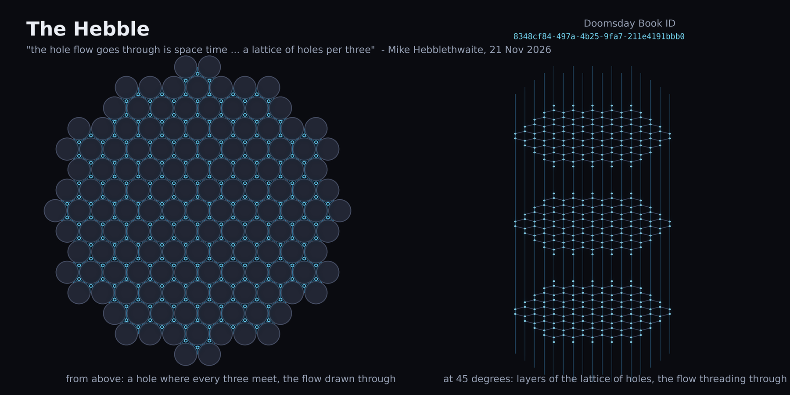
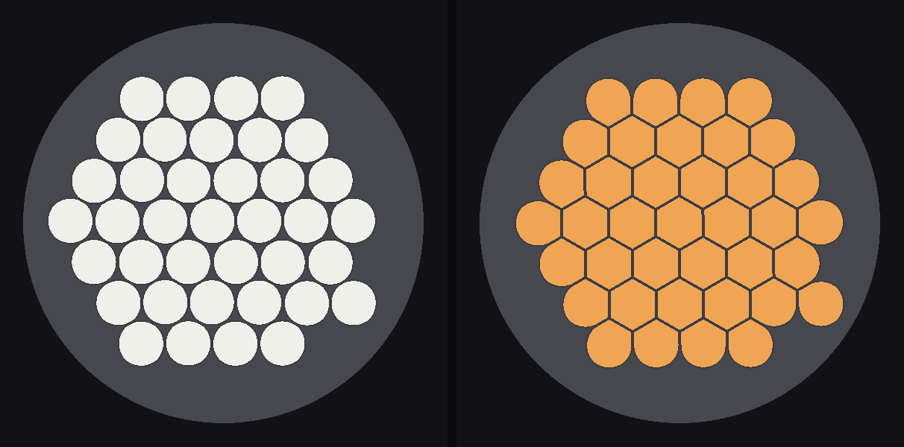

The Hebble lattice
“The hole flow goes through is space time, which seems to be a lattice of holes per three.”
Mike J Hebblethwaite, 21 November, Delta lab notebook.

From above (left): things packed hex, six round one. Wherever three meet there is a hole, and the flow is drawn in from each gap between two, through the hole of their three. At 45 degrees (right): layers of that lattice of holes, with the flow threading through them.
Join the holes up and they make a honeycomb net: the shape of graphene’s sheet. The holes left between things packed hex make it by themselves. Stack the layers and the flow runs through the sheets.
This picture is the idea drawn by hand, not a run. Its Doomsday Book ID is
8348cf84-497a-4b25-9fa7-211e4191bbb0, written in the picture and in the file.
Where it came from: the raft
The author’s dream, told before the lab ran: ping pong balls, warm and pliable, pulled together by air flowing out through the gaps where three meet, go hex. The Delta lab built it: a cone tray of fine-holed plate, a Henry vacuum pulling under it, hot air from above. Balls set in hex by hand, as on the bench.


Cold, the suction only locks them. Warm, each wall flattens against its neighbour as the flow pulls it into the gaps, and the raft closes. Warmth window: 81 to 98 C close the raft, none melting; 9D C melts every ball. A stronger Henry and finer plate holes close it sooner; the fastest: 69 seconds, holes 3 tenths of a mm, the Henry at full power, 93 C. (Numbers are D numerals: how to read them.)
What is put in, said plainly
In the raft runs the balls were set in hex by hand, and the rule for how fast a warm wall flattens is the lab’s own choice, marked as magic. The run keeps one flatness number per ball, and the pictures draw each face half way to a neighbour, so the hexagons follow from the hex start.
So a blind test is running. A fresh helper, never told the dream or any expected pattern, wrote the wall rule from materials alone (celluloid: sealed, with a hole, and splitting at its seam). The balls start scattered, every wall is its own, and hex is judged by numbers (the six-fold order round each ball), not by pictures. The plan and its pass mark were stamped in Bitcoin before any run. First finding: a sealed ball barely flattens, its heated air pushing back like a tyre; a vented or split ball flattens about a third of the way. The result goes here when the runs finish, pass or fail.
Source and proofs: github.com/mikehebblethwaite-hub/d-math
(lang/lab/runs/, proofs/blind-wall-2026-11-21/, the paper section 5.8).